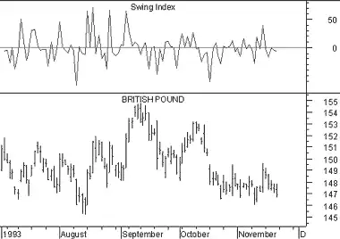

Swing Index
Overview
Developed by Welles Wilder, the Swing Index seeks to isolate the "real" price of a security by comparing the relationships between the current prices (i.e., open, high, low, and close) and the previous period's prices.
Interpretation
The Swing Index is primarily used as a component of the Accumulation Swing Index.
Example
The following chart shows the British Pound and the Swing Index.
 You can see that by itself, the Swing Index is an erratic plot. The value of this indicator develops when it is accumulated into the Accumulation Swing Index.Calculation
Although it is beyond the scope of this book to completely define the Swing Index, the basic formula is shown below. Step-by-step instructions on calculating the Swing Index are provided in Wilder's book, New Concepts In Technical Trading Systems.

Where:
The following table lists the limit moves for several commodities. You can get a list of limit moves from your broker.
| Table 14 | |
| Commodity | Limit Move |
| Coffee | $0.06 |
| Gold | $75.00 |
| Heating Oil | $0.04 |
| Hogs | $0.015 |
| Soybeans | $0.30 |
| T-Bonds | $3.00 |
You may need to adjust the limit moves shown in the above table based on the position of the decimal in your data. For example, if the price of corn is quoted as $2.45, the limit move would be $0.10. However, if the price of corn is quoted as $245.00, the limit move would be $10.00.
If the security does not have a limit move (e.g., a stock or some futures), use an extremely high value (e.g., $30,000).